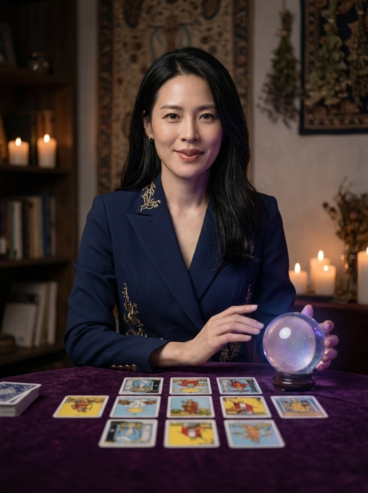

🔮
TAROT MIND WHISPER
10/31 塔羅心靈絮語 · 四層自然語言心靈解碼 · 愜意的 Annie 生活
🎙️
語音：開
心念合一 · 點擊命運之輪
請先深呼吸三次，在心中默想你近期最掛念的一件事或一個目標。
當感覺準備好了，點擊緩緩旋轉中的塔羅牌盒，命運之牌即將翻轉浮現！
🎙️ 點擊聆聽 Annie 特助感性冥想引導語
✨
大阿爾克那 22 張機率嚴格均等 (1/22) · 正逆位機率 50% / 50%
✕

特助 Annie 微醺解牌
✡
正位 UPRIGHT
MAJOR ARCANA 0
✨ 10/31 塔羅活動 · 靈性心智解碼
愚者 (The Fool)
懸崖邊的純真旅人 · 風元素
🌸
【溫暖同理 · 走進你的當下】
正在感應心靈能量...
🧠
【心靈透視 · 照見真實心事】
正在照見深層盲區...
😂
【幽默轉念 · Annie 輕鬆解壓】
正在轉動放鬆視角...
🌱
【定心小處方 · 今日微行動】
正在生成行動處方...
🌿 展開 5 大生活領域指引（職場 · 情感 · 財富 · 人際 · 心理與健康）
▼ 點擊展開
💼
職場與專案
--
🍷
情感與知己
--
💰
財富與身家
--
🤝
人際與局氣
--
🌿
心理與健康
--
🌸
Annie 的鬆弛感金句：
把複雜留給特助，你只要負責享受生活。走得從容一點，生活自然會有它的節奏。
🔊
聆聽 Annie 私房語
📋
一鍵複製完整解讀報告
🔄
收牌重洗 · 再抽一張
🎯 10/31 現場演示：
0 愚者 (The Fool)
1 魔術師 (The Magician)
2 女祭司 (The High Priestess)
3 女皇 (The Empress)
4 皇帝 (The Emperor)
5 教皇 (The Hierophant)
6 戀人 (The Lovers)
7 戰車 (The Chariot)
8 力量 (Strength)
9 隱士 (The Hermit)
10 命運之輪 (Wheel of Fortune)
11 正義 (Justice)
12 倒吊人 (The Hanged Man)
13 死神 (Death)
14 節制 (Temperance)
15 惡魔 (The Devil)
16 高塔 (The Tower)
17 星星 (The Star)
18 月亮 (The Moon)
19 太陽 (The Sun)
20 審判 (Judgement)
21 世界 (The World)
✨ 正位 (Upright)
🔄 逆位 (Reversed)
立即開牌展示
📋 已成功複製完整解牌報告！可直接貼至 LINE 分享給學員